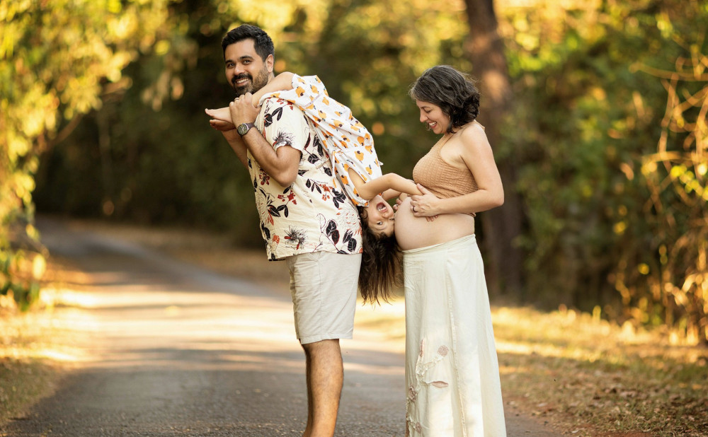

Chá do Nico
Nico está chegando em breve!
Venha comemorar conosco a chegada do irmãozinho da Yara com comidinhas, conversa boa e muita diversão.
Quando
Marque no calendário:
Sábado, 18 de outubro de 2025 às 14h.
Onde
Salão de festas do Edifício Spotlight:
Rua Camargo, 396
Butantã - São Paulo - SP
05510-050
Longitude, latitude (WGS84):
-46.70880, -23.57053
Confirmar presença
Não se esqueça de confirmar presença nesse link até dia 13 de outubro!
Presentes e doações
Nosso apartamento é pequeno e em breve estaremos de mudança. Além disso, a Yara teve muitos problemas de alergia a fraldas então teremos que testar diferentes marcas com o Nico.
Por isso, nos ajudaria mais receber contribuições monetárias 💰 do que presentes. Doações de coisas usadas 🧸 também são bem-vindas para evitar o desperdício!
PIX: chadonico@uieda.com
Agradecimentos
À família Uieda (Ciça, Gabi, Debora, Ixo) por organizar os doces e decorações, à família Sanches (Tia Helô, Simone, Tia Valéria) por organizar as brincadeiras, e à nossa família e amigos que são a nossa vila (afinal, precisa-se de uma vila para criar uma criança — agora duas!).
Obrigado!
❤️
Carol, Leo e Yara